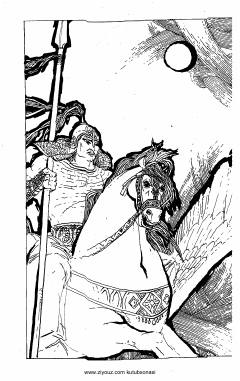

A1O'zbek xalqining mardlik va sadoqatni tarannum etuvchi buyuk qahramonlik dostoni.
Alpomish dostoni o'zbek xalq og'zaki ijodining eng yuksak namunalaridan biri bo'lib, unda qahramonlik, vatanparvarlik va sadoqat ulug'lanadi. Ushbu nashr mashhur baxshi Fozil Yo'ldosh o'g'li variantida tayyorlangan va dostonning birinchi qismini o'z ichiga oladi.